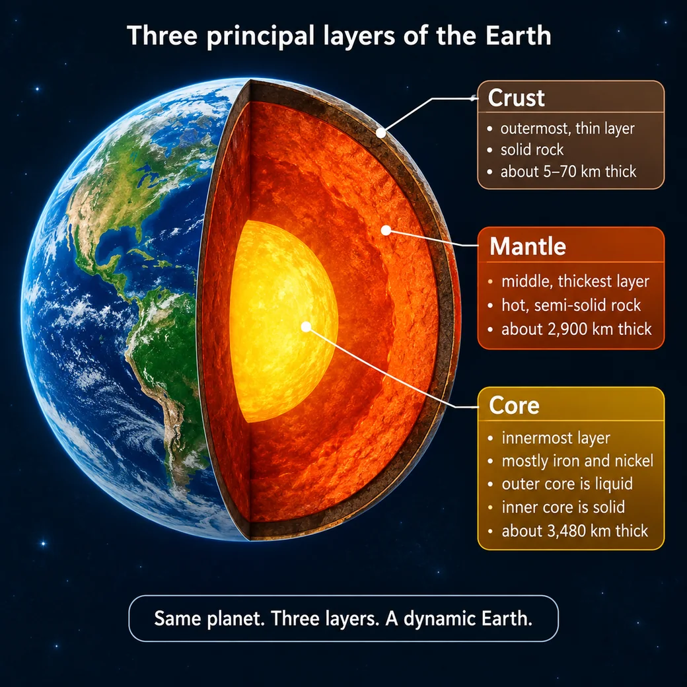

Natural diamonds are carbon crystals that formed deep within the Earth, usually millions or billions of years before the volcanic eruptions that carried them to the surface. Their formation is not a single event but part of a much larger geological cycle involving plate tectonics, carbon recycling, fluids, ancient continental roots and rare volcanic activity.
Diamond and graphite are both carbon
Diamond and graphite consist of the same chemical element: carbon. Their properties differ because their carbon atoms are arranged differently.
- In graphite, the atoms form layers that can slide over one another, making it relatively soft.
- In diamond, every carbon atom is strongly bonded to four others in a rigid three-dimensional structure, giving diamond its exceptional hardness.
Diamond is stable only under particular combinations of pressure, temperature and chemistry. Closer to the Earth’s surface, graphite is generally the more stable form of carbon.
The Earth’s mantle is solid — but it moves
The Earth has three principal layers: the crust, the mantle and the core.

The mantle lies between the crust and the core. It is approximately 2,900 kilometres thick and represents about 84% of the Earth’s volume. Although it is extremely hot, it is mostly solid. Over geological timescales, however, mantle rock can deform and move slowly.
The rigid crust and uppermost mantle form the lithosphere. Beneath it lies the hotter and more ductile asthenosphere. The slow movement of material within the mantle drives plate tectonics, subduction, mountain building and volcanic activity.
The mantle includes:
- the upper mantle, extending to approximately 410 km;
- the transition zone, between approximately 410 and 660 km;
- the lower mantle, below 660 km.
Most gem diamonds form in the upper mantle, but some rare diamonds originate in the transition zone or lower mantle. National Geographic: The Mantle
Cratons provide a safe place for diamonds
Most economic diamond deposits are associated with cratons: very old, stable central parts of continents.
Beneath cratons are thick, cool sections of lithospheric mantle known as mantle keels. They can extend to depths of 200 km or more. Because they are cooler than the surrounding mantle at comparable depths, they provide conditions in which diamonds can form and remain stable for immense periods.
Most ordinary gem diamonds form approximately 150–200 km beneath these ancient continents. Diamonds found outside these stable conditions may be destroyed, converted to graphite or never reach the surface.
This explains why diamond deposits are geographically concentrated rather than distributed evenly around the world. GIA: Recent Advances in Understanding the Geology of Diamonds
The carbon may have come from the Earth’s surface
Not all of the carbon in diamonds necessarily originated in the deep mantle.
At subduction zones, one tectonic plate is forced beneath another. Oceanic crust, sediments, water and carbon are carried into the mantle. As oceanic basalt descends, it is transformed by pressure and temperature into eclogite.
This recycled material can become involved in diamond formation. Carbon-isotope studies suggest that the carbon in some diamonds once formed part of:
- carbonate minerals on the ocean floor;
- marine sediments;
- or organic material at the Earth’s surface.
In other words, some carbon may travel from the surface deep into the mantle, crystallise as diamond and eventually return to the surface through a volcanic eruption. This journey is often described as the deep carbon cycle.
Diamonds grow from fluids or melts
Diamonds do not usually form simply because a piece of carbon is compressed. Carbon is transported through mantle rock by small quantities of fluid or melt.
These fluids move through peridotite or eclogite and trigger chemical reactions that cause dissolved carbon to crystallise as diamond. The oxidation state of the surrounding environment is particularly important because it controls the chemical form in which carbon exists.
The two principal lithospheric associations are:
- peridotitic diamonds, formed in ancient mantle rock dominated by minerals such as olivine and pyroxene;
- eclogitic diamonds, associated with transformed oceanic crust carried into the mantle through subduction.
Diamond growth may occur in several separate episodes. A single crystal can therefore contain different growth zones formed at different times and from chemically different fluids. GIA: Recent Advances in Understanding the Geology of Diamonds
Most diamonds are lithospheric, but some are superdeep
Lithospheric diamonds
Most gem diamonds form in mantle keels approximately 150–200 km below ancient continents. They can remain there for hundreds of millions or billions of years before being collected and transported by kimberlite magma.
Superdeep diamonds
A small proportion form below the continental lithosphere:
- in the transition zone, approximately 410–660 km deep;
- or in the lower mantle, below 660 km.
Scientists recognise their depth of origin from inclusions of minerals that are stable only under extreme pressures.
Superdeep diamonds are particularly valuable scientifically because direct drilling has never reached the mantle. A diamond can trap minerals and fluids during its growth, preserve them under pressure and transport them to the surface. It therefore acts like a tiny sealed capsule containing material from otherwise inaccessible parts of the Earth. GIA: How Do Diamonds Form in the Deep Earth?
Different superdeep diamonds tell different stories
CLIPPIR diamonds
CLIPPIR diamonds are a scientifically recognised category that includes some unusually large and high-quality diamonds. The name refers to several common characteristics: Cullinan-like, large, inclusion-poor, relatively pure, irregular and resorbed.
Unlike the well-formed octahedral crystals commonly associated with shallower diamonds, rough CLIPPIR diamonds may have irregular shapes or appear to be fragments of larger crystals.
Their metallic iron-nickel inclusions and deep-mantle minerals suggest that they crystallised from carbon dissolved in metallic liquid under highly reducing, oxygen-poor conditions. Evidence places their formation at approximately 360–750 km below the surface.
Their carbon may ultimately have originated in subducted oceanic material. The Cullinan diamond belongs to this broad geological family. GIA: The Very Deep Origin of the World’s Biggest Diamonds
Blue diamonds
Many natural blue diamonds owe their colour to trace quantities of boron.
Research indicates that some boron-bearing blue diamonds formed at great depths. The boron was probably carried downward in altered oceanic lithosphere during subduction. This is remarkable because boron is concentrated mainly near the Earth’s surface.
Blue diamonds can therefore provide evidence that surface material has travelled hundreds of kilometres into the mantle. GIA: How Do Diamonds Form in the Deep Earth?
Juína diamonds
Superdeep diamonds from the Juína and Machado River regions of Brazil contain inclusions indicating crystallisation from carbonate-rich fluids or melts. These fluids were probably connected to deeply subducted oceanic lithosphere.
Their inclusions provide evidence of geological processes operating in the transition zone and upper part of the lower mantle.
Diamonds reveal water deep inside the Earth
Some superdeep diamonds contain high-pressure forms of water ice known as Ice VI or Ice VII.
At mantle temperatures, this water would have existed as a fluid. Once trapped inside a diamond and transported to the cooler surface, it crystallised as high-pressure ice while retaining some of its original internal pressure.
Ice VII has been identified in diamonds from Botswana, China and South Africa. The pressures recorded by these inclusions correspond to depths of approximately 220–880 km.
This confirms that water-rich fluids exist in parts of the mantle transition zone and lower mantle. The water was probably transported downward by subducting oceanic plates. However, the evidence does not mean that there is a liquid ocean beneath the Earth’s surface: much deep water is stored within minerals or exists locally as high-pressure fluid. GIA: Diamonds Help Solve the Enigma of Earth’s Deep Water
Diamonds are extremely old — but not all the same age
Scientists cannot normally date the carbon in a diamond directly. Instead, they analyse radioactive isotope systems in mineral inclusions trapped during its formation.
The oldest dated examples, from the Diavik and Ekati deposits in Canada, formed approximately 3.5–3.3 billion years ago — before the Earth’s atmosphere became rich in oxygen.
Other diamonds are considerably younger, and one deposit can contain diamonds from several separate formation events. This shows that diamonds have formed intermittently throughout much of the Earth’s history.
The diamond and its host volcanic rock also have very different ages. A diamond may remain deep in the mantle for billions of years before a much younger kimberlite eruption brings it to the surface. GIA: How Old Are Diamonds? Are They Forever?
Kimberlite does not create diamonds — it transports them
Diamonds do not form in kimberlite. Kimberlite is a volatile-rich volcanic rock that originates deep in the mantle and rises rapidly enough to collect diamonds and pieces of their surrounding mantle rock.
Successful transport depends on several factors:
- kimberlite magma has relatively low viscosity;
- it rises considerably faster than ordinary basaltic magma;
- it is less oxidising than many other magmas;
- some diamonds remain protected inside fragments of their host rock during part of the journey.
GIA cites estimated kimberlite ascent speeds of approximately 8–40 miles per hour, or about 13–64 km/h. This is rapid for magma, although lower than the approximately 300 km/h figure sometimes given for the final explosive phase of an eruption.
If transport is too slow or the chemistry is too oxidising, a diamond can be resorbed, partially dissolved or converted to graphite. GIA: Kimberlites — Earth’s Diamond Delivery System
Diamond-bearing pipes vary greatly in richness
When kimberlite reaches the surface, it may create a volcanic structure generally described as a pipe. Different sections of the same pipe can contain very different diamond concentrations.
The Lomonosov deposit in northwestern Russia illustrates this variation. Reported grades in some pipes increase from approximately 0.5–0.6 carats per tonne in upper crater material to around 1.0–1.4 carats per tonne in deeper sections.
This demonstrates why discovering kimberlite does not automatically mean discovering an economic diamond mine. Geologists must determine:
- whether the rock contains diamonds;
- their concentration and distribution;
- their size and quality;
- and whether extraction is economically viable.
GIA: Geology and Development of the Lomonosov Deposit
Carbonado remains an unsolved problem
Carbonado, sometimes called black diamond, is not a single conventional crystal. It is a porous aggregate composed of many small, interlocking diamond grains.
It differs from ordinary mantle diamonds in its structure, inclusions and known geographical occurrence, primarily Brazil and the Central African Republic. Significantly, carbonado has not been found in primary kimberlite or lamproite deposits.
Several explanations have been proposed, including formation through unusual terrestrial processes and an extraterrestrial origin. However, the evidence is not conclusive. Its origin remains one of the unresolved questions in diamond geology.
It is therefore more accurate to say that an extraterrestrial origin is a hypothesis — not an established fact. GIA: Carbonado Diamond — A Review of Properties and Origin
Why natural diamonds are rare
A natural gem-quality diamond is the result of an exceptional chain of events:
- Carbon must be present in an appropriate mantle environment.
- Pressure, temperature and chemical conditions must allow diamond to crystallise.
- The crystal must remain in a region where it is stable.
- It must survive geological changes for millions or billions of years.
- A suitable kimberlite or related eruption must pass through the diamond-bearing rock.
- The magma must transport the diamond rapidly without destroying it.
- The resulting deposit must survive erosion and eventually be discovered.
- It must contain enough diamonds of sufficient quality to justify mining.
In one sentence
A natural diamond is an ancient carbon crystal grown from fluids or melts deep inside the Earth, sometimes using carbon recycled from its surface, preserved for immense periods and eventually delivered by a rare, rapid volcanic eruption.
References
- National Geographic — Mantle
- GIA — Recent Advances in Understanding the Geology of Diamonds
- GIA — How Do Diamonds Form in the Deep Earth?
- GIA — The Very Deep Origin of the World’s Biggest Diamonds
- GIA — Diamonds Help Solve the Enigma of Earth’s Deep Water
- GIA — Carbonado Diamond: A Review of Properties and Origin
- GIA — How Old Are Diamonds? Are They Forever?
- GIA — Kimberlites: Earth’s Diamond Delivery System
- GIA — Geology and Development of the Lomonosov Deposit